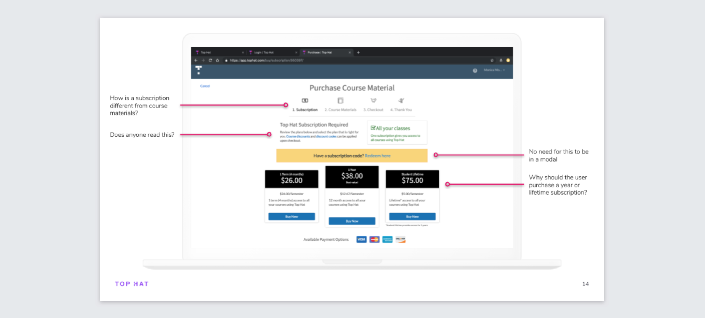
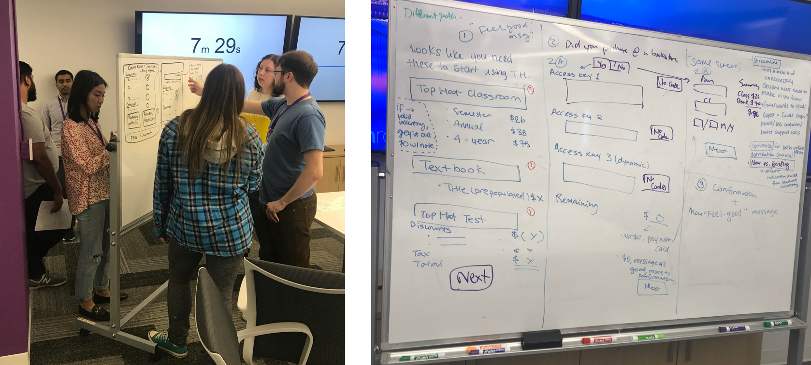
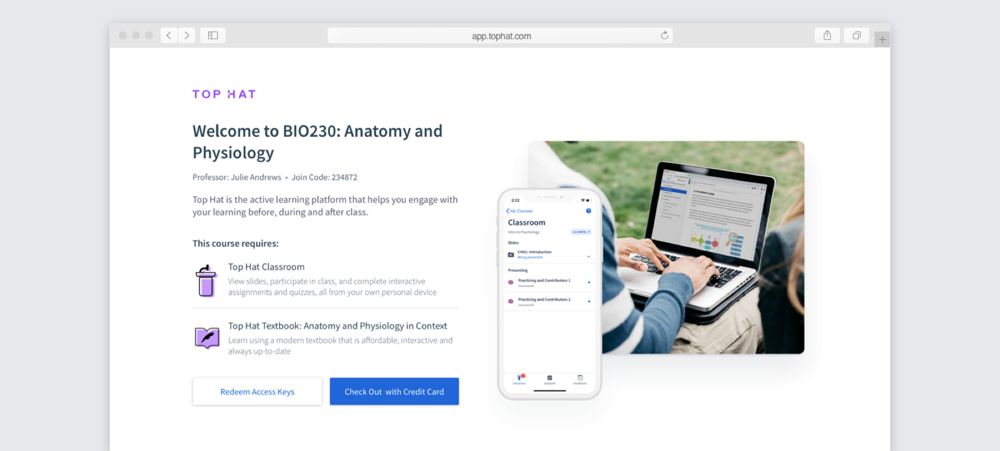
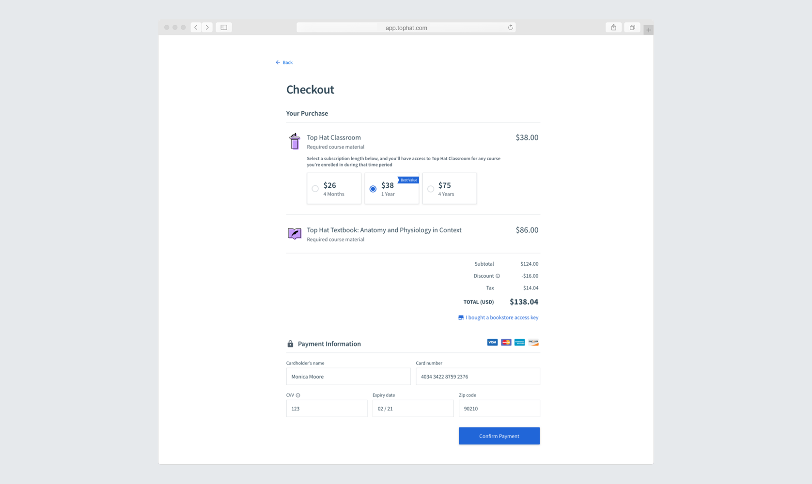
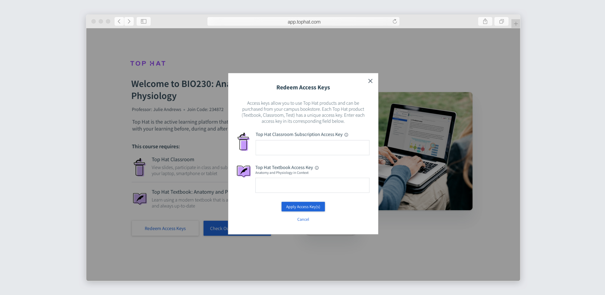
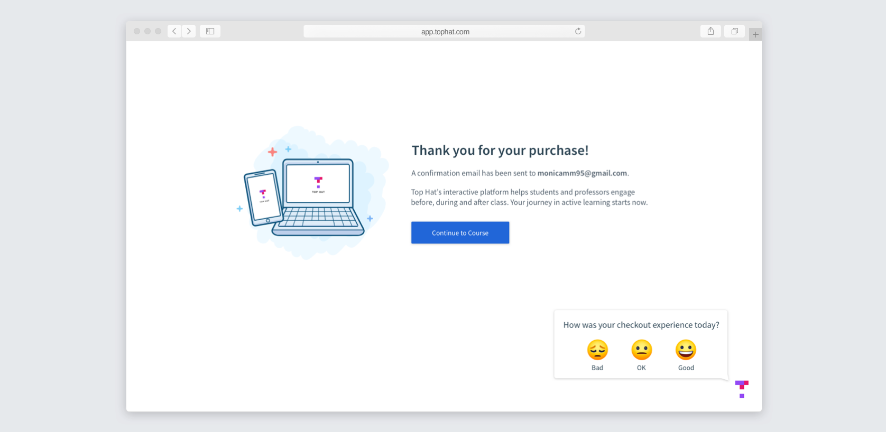
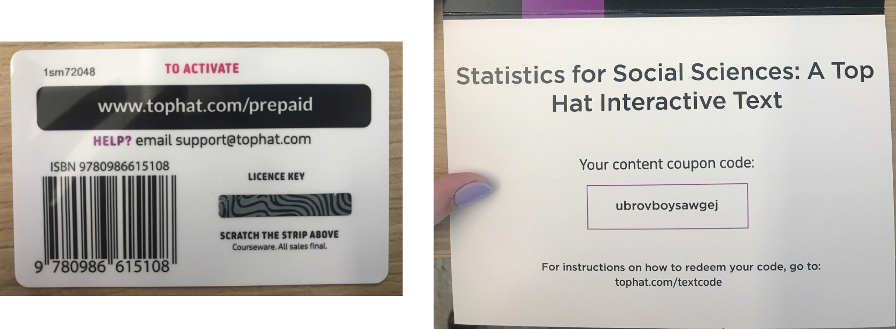
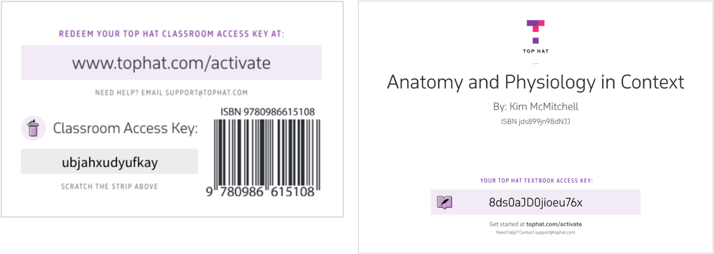

Our student checkout experience was built ages ago and was very outdated and confusing. It was the largest source of complaints from students, which ate up a lot of Customer Support’s time. The goal was to redesign our student checkout in order to improve the student experience and reduce Customer Support complaints due to checkout.
I started off by examining the current checkout experience to spot problems and learn how poor it was. One of the major problems identified was that it wasn’t clear to students throughout the process what they’re purchasing and the cost. Also confusing, was the bookstore code redemption process. Students can make their purchase at the campus bookstore and redeem the code on our site. This process was extremely convoluted, with the bookstore cards themselves being misleading. To see the full teardown, check out this slide deck.
After gaining an understanding of some problems in the current checkout, I recruited 10 Top Hat employees who had not used our checkout before. I had each user complete 2 tasks: to pay by credit card and to redeem a pre-purchased bookstore code. The main conclusions from the test were as expected: that the pricing and offering unclear and that the bookstore redemption process was convoluted. For each task I measured the task-completion rate, the error-free rate, and the time-on-task. The bookstore task had very abysmal results, with only a 40% task-completion rate and a 10% error-free rate, which told us that we had to put a strong focus on improving this experience. A full summary of the user tests is here.
To kick off the design process, I held a workshop with 9 people from across Top Hat who all had a stake in this checkout project. I divided them into groups of 3 to come up with some whiteboarded designs. A lot of great ideas were brainstormed, many of which I ended up using!
I initially designed the checkout page to have clear steps on the left, with the bill summary looking like a receipt on the right. When tested with students however, they often missed the bill summary and thought that they were only paying for Top Hat Classroom. Many missed the price of the textbook. This is not acceptable, so it was back to the drawing board for this page!
First of all, students are hit by a welcome page confirming the course they're joining and detailing the required products for the course. From here, they can either redeem an access key or check out with a credit card. The reason for not putting prices on this page is to prevent users who purchased at the bookstore from seeing the online prices. Many bookstores mark up our prices, which is beyond our control. Previously, when students saw the price disparity, they would be angry or confused and contact Support. By designing a welcome page this way, this prevents our students from having a bad first impression.
When paying by credit, they're taken to a checkout page with the purchase details at the top and the payment info underneath. We chose to auto-select the 1 year subscription in an effort to convert more users to a longer subscription term.
When redeeming an access key, a modal opens with an input field for each access key. During the benchmarking user tests, a lot of users didn't realize they needed multiple access keys to purchase multiple products. By explicitly putting the product icons and inputs, this should prevent that confusion.
And finally, here's the thank you page. We added a quick survey in the corner to gather student feedback on the new experience.
These designs, along with the new cards below, were tested in person with university students who had not used Top Hat before. Iterations were made throughout the process until we were seeing streaks of user tests with little to no error or confusion.
The user experience for Top Hat checkout does not begin when they reach our site. For the bookstore process, a big part of the user experience is purchasing the cards at the bookstore. Unfortunately the cards we had in circulation resulted in a confusing user experience. The biggest issue was that some cards said license key, while others said content coupon code, while our website said subscription code. They also provided very little instructions to the user.
So, I worked with the designer in Marketing to come up with some new, user-friendly cards. This required quite a bit of coordination between me, Marketing, Finance, the print company, and the bookstores. We couldn't change the materials to make them the same, as desired, but did make them more consistent. We placed the product icon on each card to match the UI to make it clear which card aligns with which product. Marketing also built a landing page with instructions for students to go to.
30% of students (123,000!) responded to the checkout survey, with 56% having a positive experience, 32% neutral, and only 13% negative. We saw this as a big win, since paying for course materials is typically not something students look forward to. The vast majority of negative comments had to do with the price, not the UI. Many of the comments were very complimentary of the user experience! We also reduced the number of support tickets surrounding checkout issues from 3054 in 2018 to 820! This shows that we drastically improved the student checkout experience and met our goal.